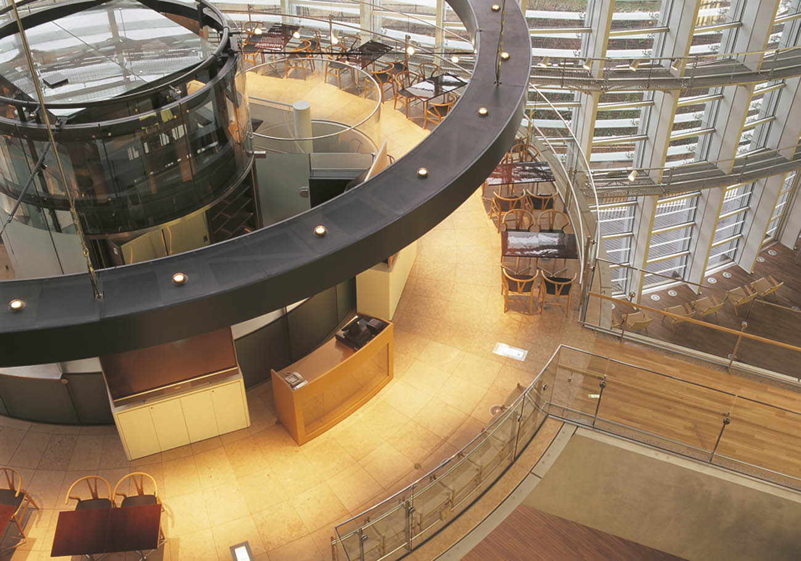
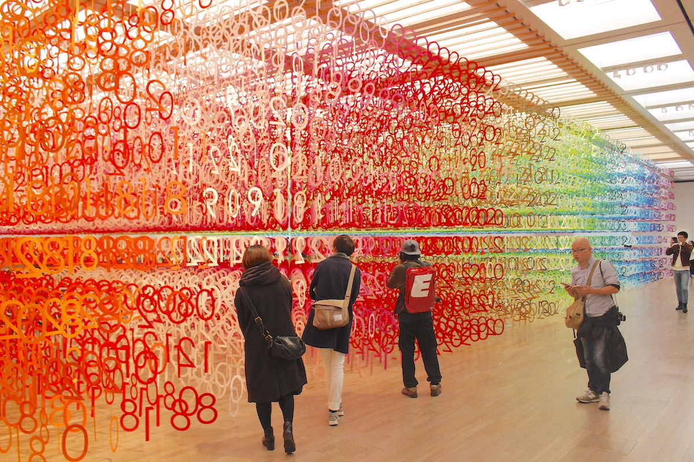
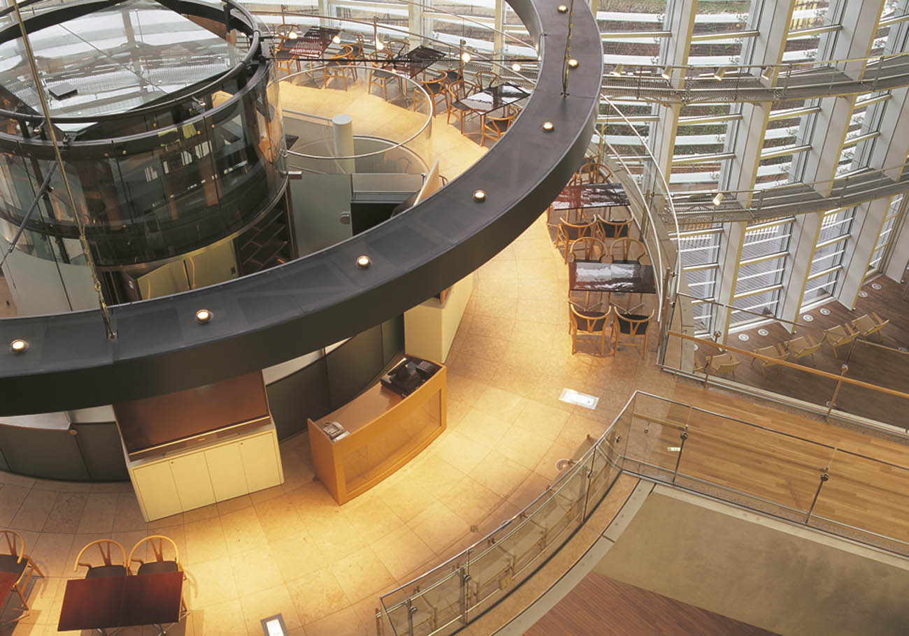
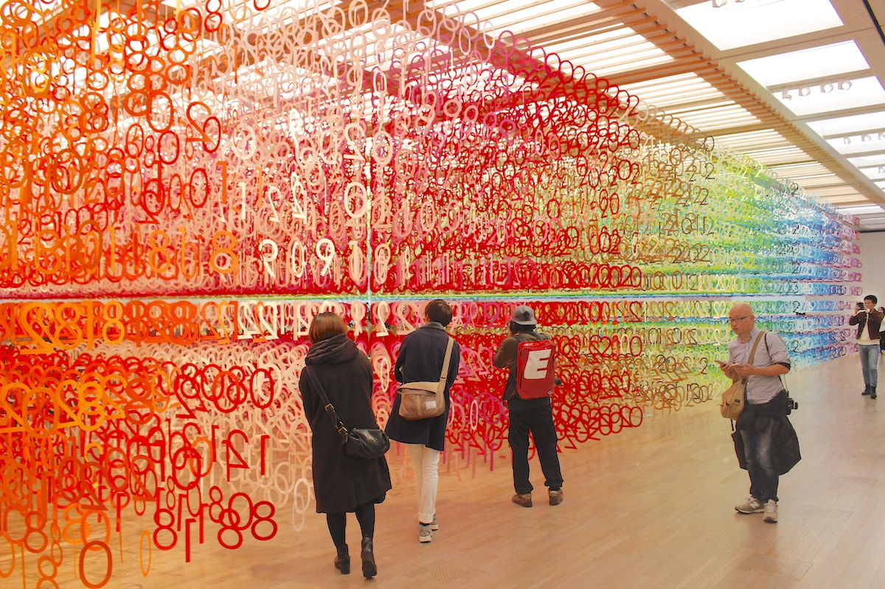

The huge, ultra-modern National Art Center, Tokyo, opened at the beginning of 2007 and is one of Tokyo's best museums. The National Art Center Tokyo is a short walk from Roppongi Hills. Designed by Kisho Kurokawa, the gleaming glass structure is Japan's largest exhibition space. Dedicated to special exhibitions, it has no permanent collection of its own.
The National Art Center is built on the old site of the University of Tokyo's Institute of Solid State Physics (now out at Kashiwa City), and is a major presence in establishing Roppongi as Tokyo's most cutting edge area.
Roppongi Station (Exit 7) on the Hibiya and Oedo Subway Lines Nogizaka Station (Exit 6) on the Chiyoda Subway Line.